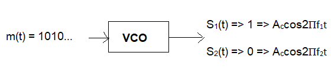

Carrier Frequency 1 in Hz:
Carrier Frequency 2 in Hz:
Sampling Frequency in Hz:
Number of Bits:
Generate BERvsSNR
Generate Constellation
Generate Message
Generate Carrier 1
Generate Carrier 2
Simulate FSK
